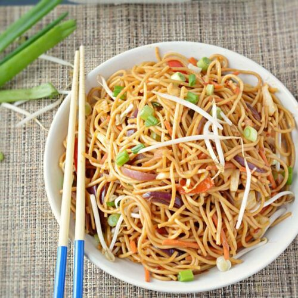

Home
Noodles Recipe
Noodles are a type of staple food made from unleavened dough that is stretched, rolled flat, and cut into various shapes. They are a versatile ingredient used in a wide range of cuisines worldwide, with each culture having its own unique variations

My Recipe
Ingredients needed:
For the Bhaji (Vegetables Mash):
- 2 cups all-purpose flour (or you can use wheat flour for whole wheat noodles)
- 1/2 teaspoon salt
- 2 large eggs
- Water, as needed
Instructions
Making the Noodle Dough:
- In a large mixing bowl, combine the all-purpose flour and salt. Create a well in the center of the flour mixture.
- Crack the eggs into the well in the flour mixture.
- Using a fork or your fingers, gradually mix the eggs into the flour until a crumbly dough forms.
- Once the dough starts to come together, knead it with your hands in the bowl until it forms a smooth and elastic dough. If the dough feels too dry, you can add a little water, a teaspoon at a time, until the dough reaches the desired consistency.
- Once the dough is formed, cover it with a clean kitchen towel or plastic wrap and let it rest for about 30 minutes. This allows the gluten to relax and makes the dough easier to roll out.
Rolling and Cutting the Noodles:
- After the dough has rested, divide it into smaller portions for easier handling.
- On a lightly floured surface, roll out one portion of the dough into a thin sheet using a rolling pin. Aim for a thickness of about 1/8 inch (3-4 mm).
- Once the dough is rolled out, use a sharp knife or pizza cutter to cut the dough into thin strips to make noodles. You can cut them as wide or narrow as you prefer.
- As you cut the noodles, lightly dust them with flour to prevent them from sticking together.
- Repeat the rolling and cutting process with the remaining portions of dough until all the noodles are formed.
Cooking the Noodles:
- Bring a large pot of salted water to a boil over high heat.
- Once the water is boiling, carefully add the fresh noodles to the pot.
- Cook the noodles for about 2-3 minutes, or until they are tender but still have a slight bite to them. Fresh noodles cook much quicker than dried noodles, so keep an eye on them to avoid overcooking.
- Once the noodles are cooked to your liking, use a slotted spoon or tongs to transfer them to a colander to drain.
- Rinse the cooked noodles under cold water to stop the cooking process and prevent them from sticking together.
- Serve the freshly cooked noodles immediately with your favorite sauce, stir-fry, or soup.